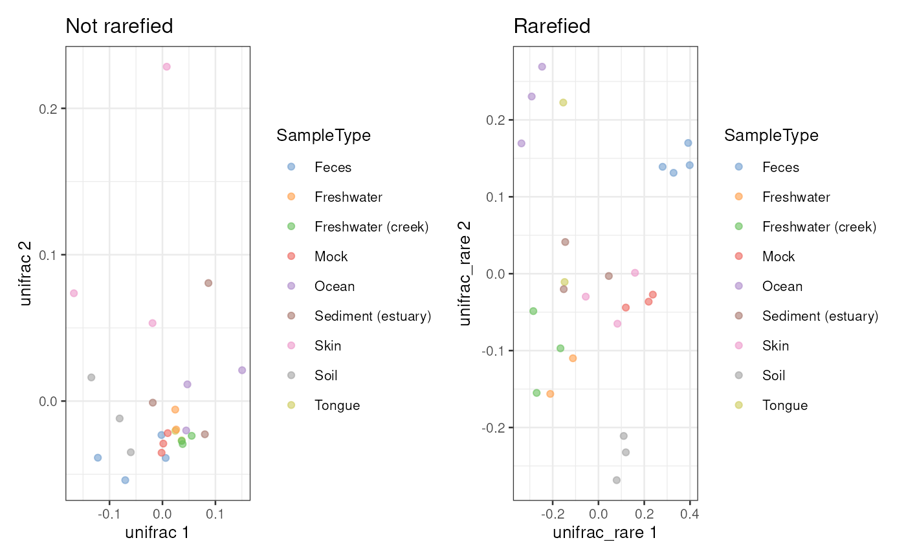

Perform multi-dimensional scaling (MDS) also know as Principal Coordinate
Analysis (PCoA). These functions are wrappers for
scater::calculateMDS.
getMDS(x, ...)
addMDS(x, ...)
# S4 method for class 'SingleCellExperiment'
addMDS(x, name = "MDS", ...)
# S4 method for class 'SingleCellExperiment'
getMDS(x, assay.type = "counts", ...)
# S4 method for class 'TreeSummarizedExperiment'
getMDS(x, assay.type = "counts", ...)a SummarizedExperiment object.
additional arguments.
FUN: Function. A function that is applied to
calculate dissimilarity. (Default: getDissimilarity)
Character scalar. A name for the reducedDim()
where results will be stored. (Default: "MDS")
Character scalar. Specifies the name of assay
used in calculation. (Default: "counts")
getMDS returns a MDS results.
addMDS returns a x with MDS results added to its
reducedDim(x, name).
These functions are wrappers for
scater::calculateMDS and
scater::runMDS. While getMDS
returns the results, addMDS adds them to reducedDim(x). The
difference is that these functions apply microbiome-specific options such
as getDissimilarity function by default.
See scater::calculateMDS for details.
library(mia)
library(scater)
#> Loading required package: scuttle
#> Loading required package: ggplot2
library(patchwork)
data(GlobalPatterns)
tse <- GlobalPatterns
# Calculate PCoA with Bray-Curtis dissimilarity
tse <- transformAssay(tse, method = "relabundance")
tse <- addMDS(tse, assay.type = "relabundance", method = "bray")
# Calculate PCoA with Unifrac and rarefaction. (Note: increase iterations)
tse <- addMDS(tse, method = "unifrac", name = "unifrac")
#> Warning: Pruning tree...
# Calculate PCoA with Unifrac and rarefaction. (Note: increase iterations)
tse <- addMDS(tse, method = "unifrac", name = "unifrac_rare", niter = 2L)
#> Warning: Pruning tree...
#> Warning: Pruning tree...
# Visualize results
p1 <- plotReducedDim(tse, "unifrac", colour_by = "SampleType") +
labs(title = "Not rarefied")
p2 <- plotReducedDim(tse, "unifrac_rare", colour_by = "SampleType") +
labs(title = "Rarefied")
p1 + p2
